第九段階：他の量子化学ソフトウェアとの連携
Molby は量子化学計算ソフトウェア Gaussian、GAMESS のファイルを作成／読み込みする機能を持っています。現状では、Molby には極めて制限された機能しかないため、おそらく他の実績あるソフトウェアを使った方がよいでしょう。しかし、Molby の操作に慣れているなら、Gaussian や GAMESS の入力を作成して結果を読み込むのに Molby を使いたいことがあるかもしれません。どのようにすればよいかを説明します。
当然のことながら、Gaussian や GAMESS のプログラムパッケージが使えることが前提です。これらが走るのは、Molby と同じマシン上でも異なるマシン（ワークステーション）上でも構いません。この項で説明するやり方で Molby を使う前に、これらのプログラムパッケージをどのように使うかを学んでおいてください。
1. Gaussian を使う
Gaussian の入力は "File" → "Export..." コマンドを使えば作成することができます。ファイルの拡張子は "gjf"（GaussianW での習慣）、または "com"（UNIX 版での習慣）です。
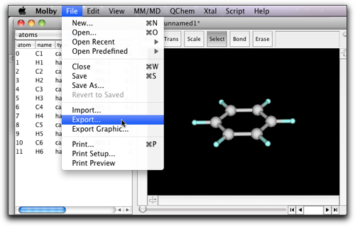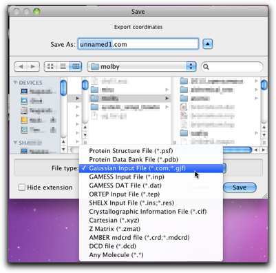
できあがったファイルは次のようになります。Molby が作成できるのは、一種類の Gaussian 入力ファイル（PM3 による構造最適化）だけですが、Gaussian の入力ファイルを手作業で修正するのは比較的簡単です。
%Chk=benzene.chk # PM3 Opt unnamed1; created by Molby at Sat Feb 11 00:30:21 +0900 2012 0 1 C -0.653000 0.585000 -1.068000 H -1.158000 1.039000 -1.898000 C 0.729000 0.607000 -1.003000 H 1.295000 1.076000 -1.783000 C 1.382000 0.021000 0.069000 H 2.452000 0.038000 0.119000 C 0.651000 -0.586000 1.076000 H 1.156000 -1.039000 1.906000 C -0.732000 -0.607000 1.012000 H -1.298000 -1.077000 1.792000 C -1.384000 -0.021000 -0.060000 H -2.455000 -0.038000 -0.110000
構造最適化を行ったあとは、構造がどのように変化するか見てみたいと思うでしょう。これは、Gaussian 出力ファイルを読み込めば実現できます。拡張子は ".out" または ".log" でなくてはなりません。
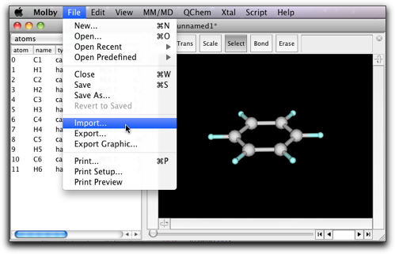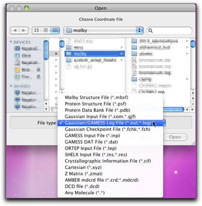
2. GAMESS を使う
GAMESS の入力を作成するのは Gaussian よりもずっと複雑なので、専用のダイアログが用意されています。このダイアログは、"QChem" → "Creating GAMESS input..." コマンドで開くことができます。
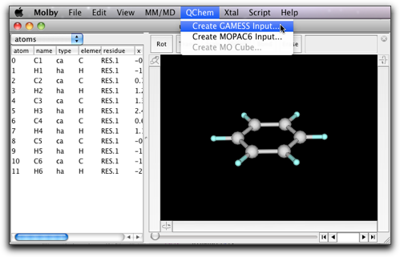
このダイアログでは、いろいろな設定を決めることができます。
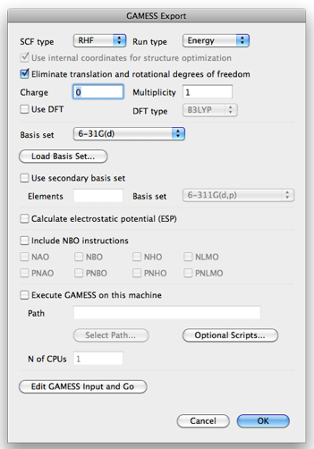
- SCF Type: RHF, ROHF, または UHF.
- Run Type: Energy, Property, または Optimize.
- Use internal coordinates for structure optimization: 内部的に Z-matrix を自動生成するための命令を付け加えます。（注： 直線状分子には使えません。）
- Charge: 分子の形式電荷。
- Multiplicity: スピン多重度。
- Use DFT: DFT 計算を行うときチェックします。
- DFT type: このダイアログでは B3LYP のみ指定できます。
- Basis set: 以下の基底が指定できます：PM3, STO-3G, 3-21G, 6-31G, 6-31G(d), 6-31G(d, p), 6-311G, 6-311G(d, p), または LanL2DZ.
- Load Basis Set: ファイルから追加の基底関数を読み込みます。ファイルは GAMESS の標準的なフォーマットに従っている必要があります。ファイルの例として、"Scripts" ディレクトリの中の "basis sets" ディレクトリを見てみてください。
- Use secondary basis set: 特定の元素のみ別の基底を使いたいときチェックします。
- Elements: 別の基底を使う元素（コンマで区切って複数指定できます）。
- Basis set: 別の基底。
- Calculate electrostatic potential: RESP 電荷を求めるための静電ポテンシャルの計算を行う。
- Include NBO instructions: GAMESS が NBO (natural bond orbital) をサポートしている場合は、これらのチェックボックスで指定したものを NBO プログラムで計算させるように、コマンドを生成します。
- Execute GAMESS on this machine: (0.6.5 以降) Molby と同じコンピュータに GAMESS がインストールされているとき、GAMESS を実行することができます。Path に GAMESS の実行ファイルのフルパス名、N of CPUs に使用する CPU のコア数を指定します。
（注： GAMESS のバージョンによっては動作しないことがあります。）
GAMESS の計算が終了すると、*.log と *.dat の２つのファイルができます。どちらも "Import..." コマンドで読み込むことができます。ある種の情報（たとえば構造最適化途中の座標）はどちらのファイルにも含まれていますが、その他の情報はどちらか一方にしか含まれません（たとえば、基底を構成する Gaussian 関数の完全な係数は *.log ファイルにしかなく、精度の高い軌道係数は *.dat にしかありません）。GAMESS 読み込み機能を十分に活用するには、GAMESS の出力が何を含んでいるかをよく理解する必要があります。
3. GAMESS を用いて RESP 電荷を計算する
分子力学計算で静電相互作用を評価するための部分電荷の計算についてはすでに説明しました。そこでは半経験的分子軌道計算を用いましたが、可能ならば ab initio 計算の方がよい結果を与えます。GAMESS を使って計算する方法を説明します。
メニューより "MM/MD" → "GAMESS/RESP..." を選びます。
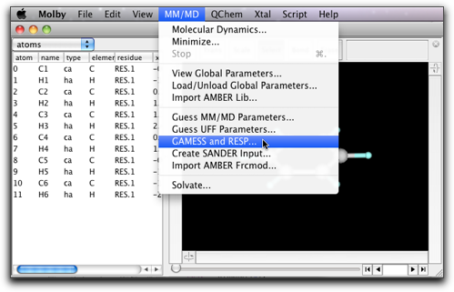
次のウィンドウが開きます。第１のステップとして、"Create GAMESS Input..." ボタンを押します。
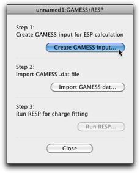
GAMESS のダイアログが開きます。大切なのは、"Calculate electrostatic potential (ESP)" チェックボックスをオンにすることです（ここの手順に従えば、自動的にオンになっているはずですが、一応確認してください）。分子の電荷・スピン多重度が正しいことを確かめ，基底関数 (6-31G(d) がおすすめ) を指定してください。

OK ボタンを押して GAMESS 入力を作成し、GAMESS で計算を実行してください。計算には時間がかかりますから、この時点で Molby を終了して他の作業をしていただいて構いません（ただし、分子ファイルを mbsf 形式で保存することを忘れないで！）。
GAMESS 計算が完了したら、同じ分子ファイルを開き、"MM/MD" → "Tools" → "GAMESS/RESP..." をもう一度選択してください。今度は、第２ステップの "Import GAMESS dat..." ボタンを押します。
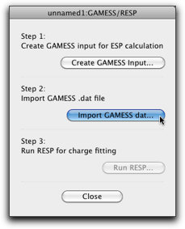
GAMESS の dat ファイルを選択し（GAMESS の計算が成功すればこれができているはずです）、読み込んでください。読み込みが完了したら、"Run RESP..." ボタンが有効になっているはずです。もしそうならなかったら、読み込んだ dat ファイルに静電ポテンシャルのデータが含まれなかったということです。もう一度第１ステップからやり直し、特に "Calculate electrostatic potential (ESP)" チェックボックスがオンになっていることを確かめてください。
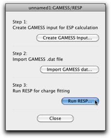
"Run RESP..." ボタンを押すと、次のダイアログが開きます。これは、前に説明した Antechamber のダイアログとほとんど同じです。
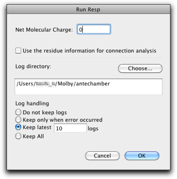
"OK"ボタンを押すと、RESP 部分電荷が各原子に対してアサインされます。